Employment
Life Cycle Engineering - Jr. Software Engineer
Philadelphia, PA
June 2023 - Present
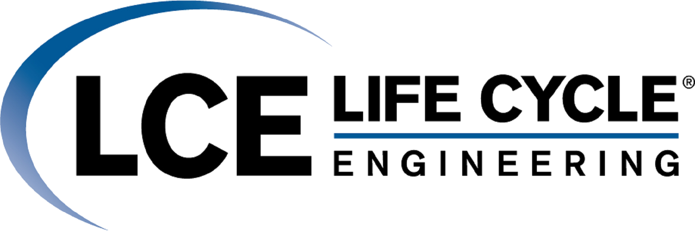
I am currently employed as a Jr. Software Engineer at Life Cycle Engineering
at the Navy Yard in Philadelphia, PA.
When I was finishing up my Bachelor's program at the University of Delaware,
I was very uncertain as to where I would end up following graduation. Luckily,
as I was seeking out career opportunities at the University of Delaware career
fair, I came across Life Cycle Engineering.
The program manager I met (who would
eventually become my actual program manager) presented me with the opportunity to
provide software support to the U.S. Navy. Being part of a midsized Navy contracting
company with numerous benefits and an emphasis on employee development and customer
advocation was an opportunity that I had to take. Despite the lengthy process of getting
a secret security clearance, I got the chance to meet many clients from NAVSEA Philadelphia
and, eventually, became a part of the LCE family. This ended up being the perfect jumpstart to
my career as a Software Developer.

USS John P. Murtha (LPD 26)
During my first year and a half with LCE, I provided software development support for LPD 17
Engineering Control Systems (ECS). The team uses and builds upon a legacy framework to provide a user-friendly
Human Machine Interface to U.S. Navy sailors on various fleets. The ECS is a critical system on
these fleets as it provides information and safe operation on ship elements such as propulsion,
electrical generators, and auxiliary devices.
Supporting this team taught me a lot about how ship systems function and how ECS manages those
systems. Some skills I learned and utilized include:
- ECS Page Building
- Programming in Ada, Bash, and Batch
- Modbus bitwise communications for signal processing
- Logic & Analog/Digital programming in ROSE
- Console configurations running Windows 10 OS
- Remote Terminal Unit (VRTU) communications
- C++ Development on Windows XP OS
Providing software support to LPD 17 ECS under LCE has opened the door to new experiences
and opportunities.
In September 2024, I got to travel to San Diego, CA and go onboard USS John P. Murtha, where I performed
updated installations of ECS on Windows 10 consoles. This experience
gave me the chance to learn first-hand how the work I do positively impacts U.S. Navy operations and
how sailors rely on engineers like myself to build and maintain system functionality.
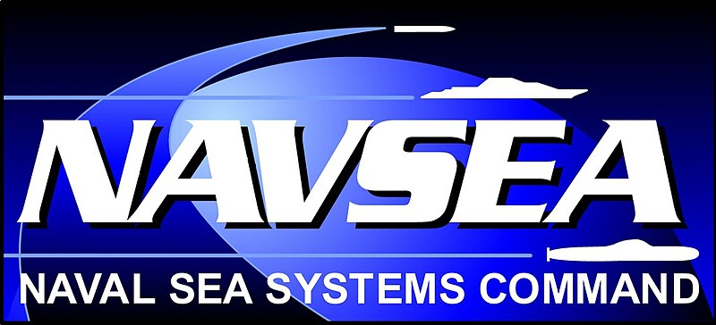
In November 2024, I started providing software support to a different customer under NAVSEA Philadelphia
known as Platform Independent Machinery Control Systems (PIMCS). Unlike LPD 17 ECS, PIMCS provides continuous
development and deployment for a more modern and newer framework for Navy ship controls. Other integrators
within NAVSEA Philadelphia (including LPD 28 ECS and Coast Guard Machinery Control Systems) rely on this
framework as a basis for developing their own systems, which they then deliver out to other fleets.
Similar to the LPD 17 ECS legacy framework, the PIMCS framework contains some (but not all) ship components
such as propulsion and ballast. Java Swing is primarily used for the frontend elements of the PIMCS application,
whereas Apache Velocity templates and other Java libraries support the backend. Since our main objective is to
provide an application framework, not all functionalities of a finished software product are included. Nevertheless,
some select technical components are included for the sake of testing such as alarm severity systems and PLC
data transmissions.
Some skills I have utilized with PIMCS include:
- Java (Swing and AssertJ frameworks)
- Database configurations in MySQL and SQLite
- Agile development methodologies
- Network packet scanning in Wireshark
- Template programming in Apache Velocity
- Data communications in Programmable Logic Controllers (PLCs) using RSLogix 5000
- Data definitions in Extensible Markup Language (XML)
- Git and GitLab
- Documentation and inventory asset management
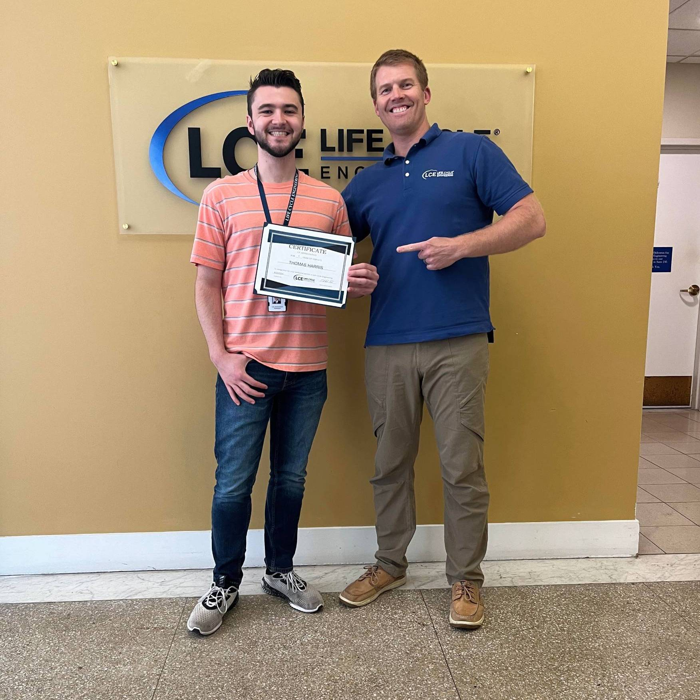
1 Year Milestone with LCE
Mark Medvetz (program manager) & Myself
When I first arrived at LCE's office in June 2023, I was both excited and anxious to begin my professional
Software Engineering career. As it usually goes when starting a new job, I wasn't 100% sure what to expect
or what I would be working with. Navigating a new environment in a completely new place can be somewhat
mentally challenging for someone like me. Despite this, I managed to navigate through the intensive onboarding
processes and continue to overcome all other obstacles thus far.
I have been a part of the LCE family for over 2 years now. Being a successful Software Engineer
for any company not only includes being knowledgeable in your field, but also having an outstanding and
motivational support system behind you. LCE has without a doubt exceeded my professional and personal expectations
for over two years and I'm certain they will continue to do so for the future. I will always be grateful for
all that my program managers and the staff at LCE have done for me.
Frontier Technologies Inc. - Certification Training Consultant (Part-Time)
Remote (Wilmington, DE)
January 2023 - May 2023
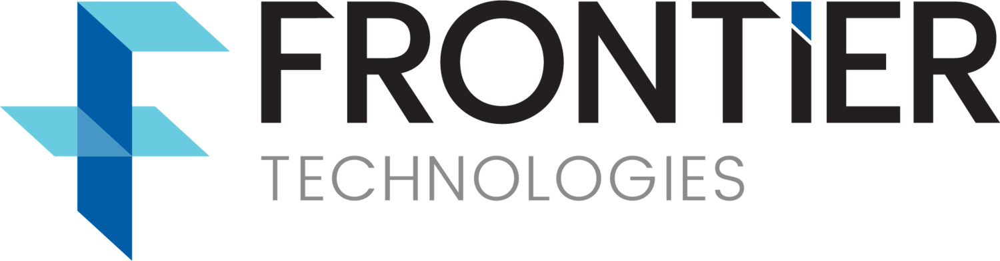
Primarily during Winter Break of my senior year undergraduate studies, I partook in a Certification
Training program with Frontier Technologies Inc (FTI). This was a part-time and fully remote role with the
corporate office in Wilmington, DE.
During my short time with FTI, I took multiple courses that improved my knowledge of Cybersecurity and
Computers/Systems Engineering. All of theses courses included one or more knowledge assessments which presented me
with a certificate of completion. The main courses that I completed were hosted by VMware, Palo Alto Networks,
and IBM.
Although I didn't get a chance to showcase or practice my Software Development skills, being a consultant
for FTI was a great opportunity for my career growth. I gained lots of knowledge in topics such as
Palo Alto Computer Architectures, VMware Carbon Black (and other similar products) etc. I even got a
chance to meet some of the main staff members at FTI (including the company's CEO) and learn more about what they do and how
Cybersecurity impacts today's business atmosphere. The growth I gained in knowledge and professional networking from
FTI has greatly helped me get to where I am now in my career.
A.I. Whoo - Software Engineer & Team Member
Newark, DE
August 2022 - May 2023
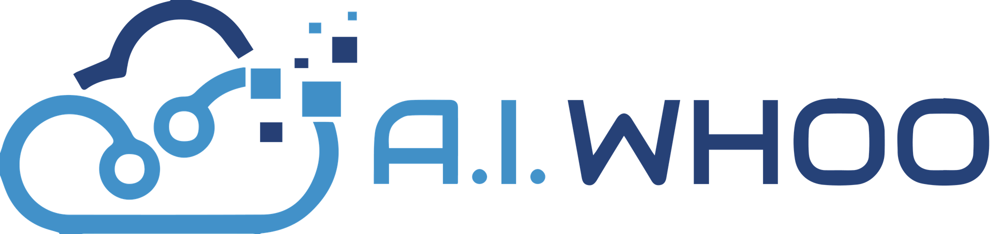
During my senior year studying Computer Science at the University of Delaware, I provided software support for
the locally founded software corporation known as A.I. Whoo.
As part of my Capstone requirement, I worked in a team environment under client supervision to provide meaningful
and impactful software solutions. Our client was Dr. Matthew Saponaro, the founder of A.I. Whoo.
He is a University of Delaware graduate who also works as the Teaching Assistant Coordinator for the UD Department of
Computer & Information Sciences.
Working in a software development Capstone group for a client is vital to succeeding in the professional world.
The projects assigned to my teammates and I taught us various lessons in regards to professional software development.
Some of these include effective client/customer communication, better programming habits, Agile methodologies, and
utilization of enterprise software for a large organization. These lessons came with their own sets of challenges as well,
such as meeting consistent weekly deadlines and ensuring our client is happy with code deliverables.
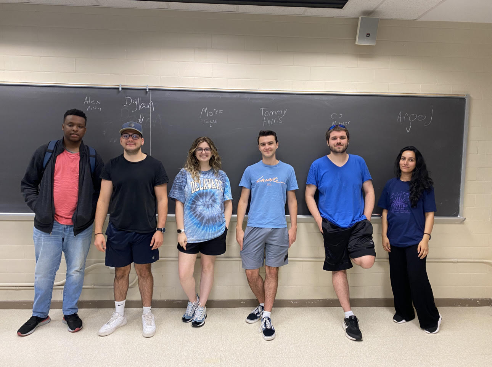
Team 10 - Fall 2022 Semester
Pictured left to right: Alex Darby, Dylan Lazzari, Moira Tews,
Tommy Harris, CJ Mitterer, Arooj Liaqat
During the Fall 2022 semester, the project that my team and I worked on under Dr. Saponaro's supervision was known as QRVision.
The goal of the project was to create a redeemable points system for usage in local state parks in the Newark, DE area.
Visitors to said parks can scan QR codes using their mobile devices to collect points. These points can then be redeemed
for rewards pertaining to local Newark businesses. A side effort of this project was getting businesses onboard with the project
as partners; some of them included UD Athletics, TedX, and UDairy Creamery.
The efforts my team and I contributed focused mostly on backend functionality i.e. the "behind the scenes" server-side code
that handles data management and user requests. My contributions included encryption and decryption for end-to-end communications
for heightened security and sending AJAX POST requests for checking and modifying user points. Languages and software utilized include:
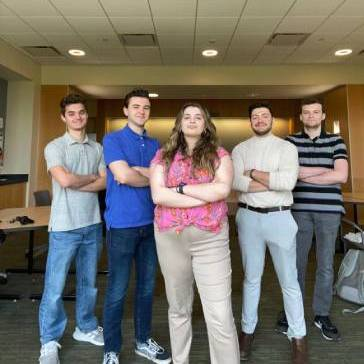
Team 10 - Spring 2023 Semester
Pictured left to right:
Zac Golpira, Tommy Harris, Moira Tews,
Dylan Lazzari, Nick Steuernagle
During the Spring 2023 semester, my team and I were assigned a new project (again under Dr. Saponaro) known simply as TA Automation.
The goal of the project was to create a foundation for a new system that manages several assets of Teaching Assistants for the
Computer & Information Sciences Department at the University of Delaware.
Prior to starting this project, the responsibilities performed by the TA Coordinator were more hands-on. They had to manually file
paperwork, ensure TAs get paid in a timely manner, and pass the paperwork onto Human Resources (HR). This process took a long time
to complete and TAs sometimes got paid later rather than sooner. A flow of processes was used as an overlay as to how the new
automation system works. This pipeline included steps such as onboarding students through Criminal Background Checks and I-9,
automatic emails being sent to TAs for owed back hours, and automatic emails being sent to TA Coordinator for entry of back hours
and ensuring TAs are paid on-time.
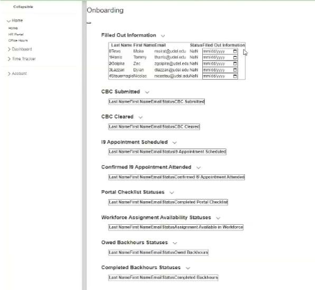
Initial Onboarding page
for TA Automation project
My primary tasking for this project included using dataframes for each step of the pipeline and ensuring student names and information
progresses through each dataframe correctly. Although it was mostly backend development, I also added some Quality-of-Life frontend
features such as collapsible dataframes and calendar-style date selections.
Languages and software utilized for both capstone projects include:
- Python (FastAPI, Pandas, and Behave libraries)
- Javascript and HTML
- JQuery and CryptoJS for JSON object encryption
- pycryptodome and hashlib for JSON object decryption
- Google Sheets (database)
- PyCharm IDE
- Asana (Task planning)
- Clockify, Notion (Agile Methodologies)
- Discord (Communication)
- Git and GitHub
University of Delaware Dept. of Computer and Info. Sciences - Teaching Assistant (Part-Time)
Newark, DE
August 2022 - December 2022
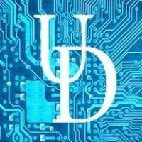
I served as an undergraduate Teaching Assistant (TA) in the UD CIS Dept. during the Fall 2022 semester.
The course I was assigned to was CISC 106 - General Computer Science for Engineers, an introductory Computer Science course
for First-Year Engineering students. The course covered various programming practices and techniques, as well as basic
programming in Python. Some of my duties included instructing in-class activities, grading worksheets, answering
student questions through Discord, and hosting office hours outside of class for students to receive additional help.
Being a TA for this course allowed me to re-familiarize myself with Python and its concepts. More importantly,
it allowed me to learn more about leadership and spreading knowledge in an educational setting.
Postmates & Uber Eats - Delivery Driver (Part-Time)
Clifton, NJ & Newark, DE
June 2020 - August 2022
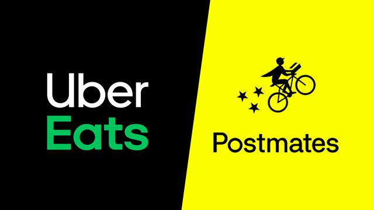
During semester breaks in the midst of my undergraduate studies, I worked as a Delivery Driver for Postmates and
eventually Uber Eats.
Being a Delivery Driver was a fantastic job opportunity as it was (mostly) easy to
do and could be done from anywhere. Working as a Delivery Driver through an online platform mitigated having to
keep employers informed since I was able to set my own schedule and work at my own pace.
I first started working for Postmates in June 2020 amidst the ongoing COVID-19 pandemic. At that time, lots of places
were not hiring due to the negative effects the pandemic brought onto the workforce. Making money on the side through
Postmates was the best thing for me to do given the circumstances. Although the driver-side application for iPhone
wasn't the most intuitive and Postmates itself was somewhat "sketchy", starting with them was a great opportunity
for me to start my side career in food delivery.
In December 2020, Postmates Inc. was acquired by Uber for $2.65 billion. As a part of this deal, Postmates' delivery
network became integrated with Uber Eats and most drivers from the former transitioned to the latter. Knowing
how I already had experience in food delivery and the advantages of Uber Eats, I agreed to transition and started
delivering for Uber Eats in May 2021.
Uber Eats presented many upsides in comparison to Postmates. I was able to see the expected earnings amount for
each delivery, received reimbursements for tolls on deliveries, and saw exact locations for pickup and dropoff locations
through the in-app navigation system. Being particular about which delivery offers to accept/reject helped me make the
most out of food delivery. For instance, when receiving a $4.00 offer for a 20 minute estimated delivery time, it's
best to decline and await a delivery that has a better chance of leaving a tip. There are also other factors
to consider, such as delivering to apartment buildings, restaurant closing times, and long drive-thru lines at fast
food restaurants when the dining room is closed.
I worked for Uber Eats during my time off from undergraduate studies until my senior year (2022-23). Although I am
in a much better place career wise, it was great to "be my own boss" and flexibly work anywhere.
Wendy's - Cashier (Part-Time)
Wayne, NJ
June - August 2018
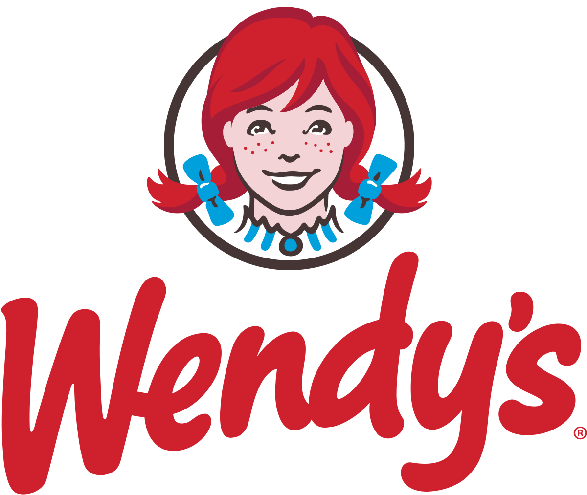
During summer break after my junior year of high school, I worked part-time as a Cashier at Wendy's in Wayne, NJ.
My main tasks included taking customer orders in the dining room and drive-thru, maintaining counter and dining room
cleanliness, re-stocking condiments and cups, and handling some food preparation and bagging. I also learned more about
working as part of a team and coordinating with others to quickly complete customer orders. I left Wendy's in August
2018 shortly before my senior year of high school started.
Education
The University of Delaware
B.S. Computer Science (Cybersecurity focus), May 2023
Applied Trombone Minor
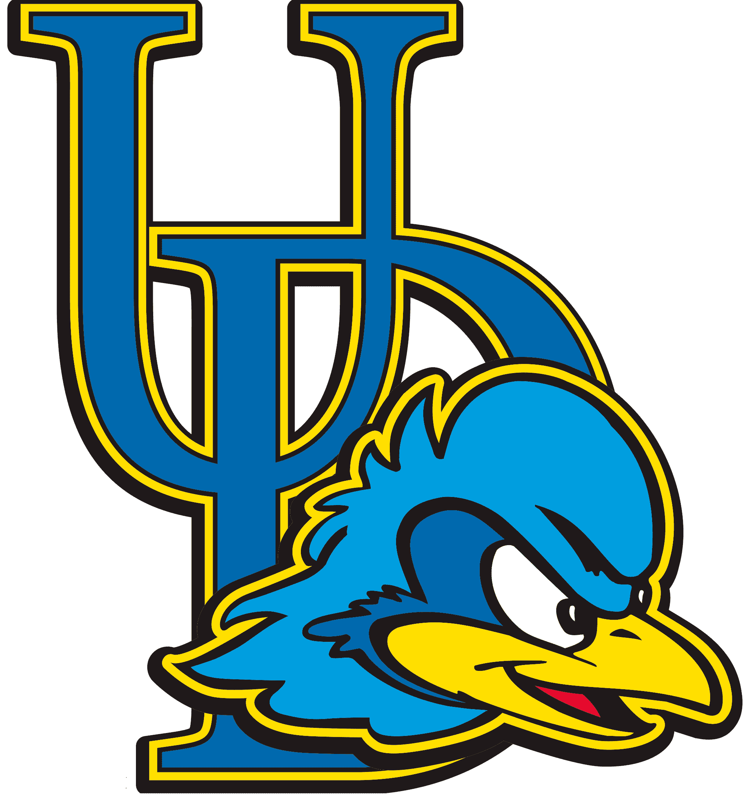
My journey at the University of Delaware was a (somewhat) interesting one. I was a senior in high school when I was deciding on
a college to attend. I knew that I wanted to major in Computer Science given my extensive interest in computers
growing up. Although I had also received offers from Hofstra, Monmouth, and Penn State Harrisburg, the University of
Delaware presented me with the warmest and friendliest environment in terms of student life and campus appearance. I
had initially been admitted to UD for a Music major program on trombone (my secondary choice when applying), but I
submitted an appeal and successfully got into a B.A. Computer Science program.
I made my official first move to UD in August 2019 where I stayed in the Harrington dorms.
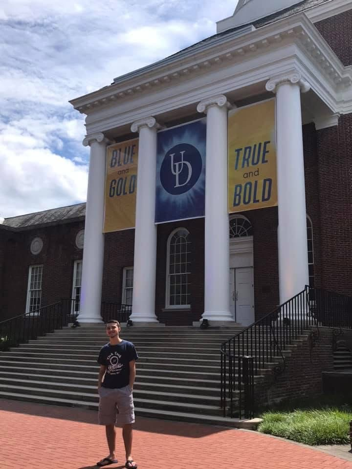
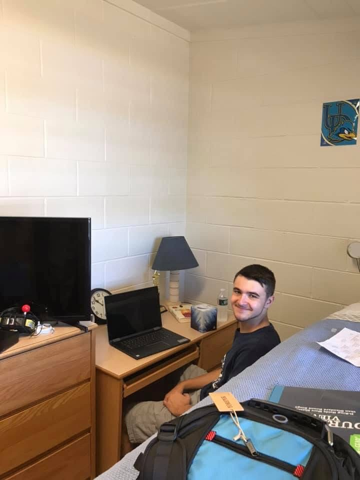
My first day on campus - Fall 2019
Like many teens leaving their parents' nest to go to college, I started my undergraduate journey not knowing anyone
or what I wanted to do. I had been taking an introductory Python course and a team-based engineering course, amongst
other courses. Despite this, I still maintained a passion for trombone playing as I partook in Jazz Ensemble, Symphonic
Band, and Trombone Choir. I had formed some small friendships and acquaintanceships with other students and professors
during the semester, particularly other freshmen in my dorm, my Resident Assistant (RA) and my trombone professor.
Despite the hardships I faced, including homesickness and having to drop out of my Calculus I class, I managed to make
the Dean's List during my first semester and was determined to improve all aspects of my college life by the next semester.
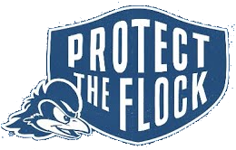
I returned to campus in the spring with high hopes of becoming more involved outside of classes, getting through my heavy
course load (including re-taking Calculus I), and creating stronger friendships. This was also the semester where I officially
started my Applied Trombone minor. I had been making significant progress in my goals, despite having to drop a trombone
studies class whilst enduring my heavy course load. I had also naively enrolled in three different music ensembles,
which resulted in me having little to no down time for studies and other assignments. Needless to say I was very confused
and frustrated with myself in not knowing what I truly wanted to do. This continued in March 2020 and beyond, when the dorms
at UD were closed and classes were switched to a remote learning setting. As my mom drove me home that day, I could only
imagine the worst as feelings of helplessness washed over me. I resumed my classwork one week after returning home and did my
best to finish the semester strong despite all the hardships going on in the world at the time. On the plus side, I was relieved
of my strenuous course load (including music ensembles) and I managed to pass my classes with some assistance from
friends, acquantainces, and professors.
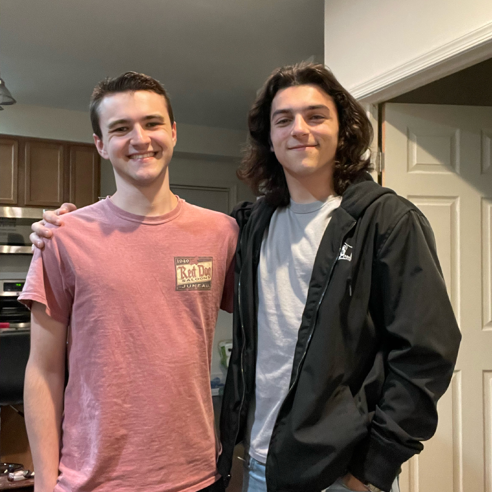
My roommate Nick and myself
As online course instruction continued into the next academic year, I still returned to campus in an attempt to have some form
of traditional college experience whilst now living off-campus. I had gotten along well with my roommates and partook in
socially distanced trombone study & choir, but had very few in-person interactions otherwise. Nevertheless I still connected with
other students virtually and collaborated alongside them to get the most out of my Computer Science education. The middle of the
academic year was a big turning point for me - I switched from a B.A. program to a B.S. program with a focus in Cybersecurity. This
proved to be a much better path forward as it allowed me to learn more advanced topics such as Operating System design,
Data Structures, Algorithms, Computer Networks, Software Engineering, etc. In between semesters, I became infected with the coronavirus
(some luck, right?) and re-took and passed a Discrete Mathematics course. This was, without a doubt, a very big challenge for me, but I overcame it without a hitch.
After the academic year had concluded, I managed to do exceedingly well overall and even made the Dean's List in the Spring.
I looked forward to what my third year of undergrad had in store for me.
Clifton High School
Class of 2019
Clifton, NJ
I received my high school diploma from Clifton High School in June 2019.